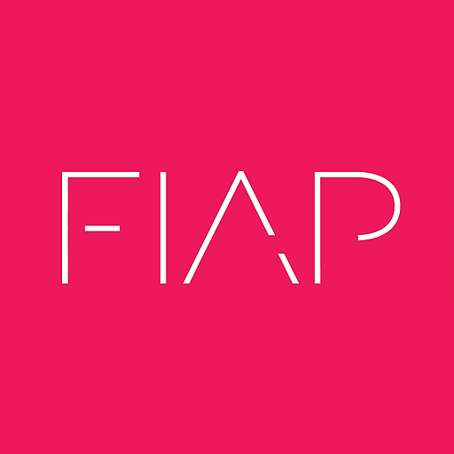

Pós-graduação · Em andamento
Especialização em Inteligência Artificial para Desenvolvedores · FIAP
Em andamentoMarço de 2026 — Janeiro de 2027
Pós-graduação Lato Sensu focada no desenvolvimento de soluções inteligentes com IA, Machine Learning e modelos generativos aplicados a sistemas, automações e produtos digitais.
Conteúdo do curso
Áreas de estudo
- Fundamentos de IA e Machine Learning
- Python aplicado à IA
- Machine Learning avançado
- Processamento de Linguagem Natural (NLP)
- Computer Vision (OCR e detecção de objetos)
- Inteligência Artificial Generativa (GenAI)
- Large Language Models (LLMs)
- IA em Cloud (AWS, Azure e GCP)
- Engenharia de Prompts, RAG e Fine-tuning
- Análise de dados (texto, áudio e vídeo)
- Privacidade, segurança da informação e LGPD
Capacidades desenvolvidas
- Desenvolvimento de aplicações inteligentes orientadas a dados
- Criação e validação de modelos de Machine Learning
- Desenvolvimento de soluções com LLMs e chatbots
- Integração de IA em sistemas, APIs e automações
- Análise de grandes volumes de dados
- Aplicação de IA generativa em cenários reais